돈 되는 주문서 퀘스트
메이플랜드에서 주문서를 주는 퀘스트를 지역별로 정리했어요. 재료를 경매장에서 사서 깨도 남는지, 얼마나 남는지 계산했어요.
다 사면 · 보통 재료 약 470.5만메소
+2,214.9만메소
제일 안 좋게 +1,993만 제일 좋게 +4,346.5만
직접 모으면 +2,675.9만 (+2,454만 ~ +4,807.5만)
다 사면 · 보통 재료 약 766.5만메소
+2,729.7만메소
제일 안 좋게 +2,006.4만 제일 좋게 +7,391.9만
직접 모으면 +3,486.7만 (+2,763.4만 ~ +8,148.9만)
먼저 읽어 주세요 시세 기준 11월 14일 새벽 2시 경매장 시세 · 손익 계산 방법 · 추천/고려 뜻
- 시세 기준 11월 14일 새벽 2시 경매장 시세. 시세는 계속 바뀌니 참고용으로 봐 주세요.
- 손익은 "보상 시세 − 재료값"이에요. 기본은 재료를 경매장에서 다 샀을 때, "직접 모으면"은 기타템을 사냥으로 모으고 포션 같은 상점 물건과 메소만 낸다고 본 값이에요.
- 보상이 랜덤인 퀘스트는 제일 안 좋게 / 보통 / 제일 좋게 세 숫자로 적었어요. 보통은 나올 수 있는 보상 중 가운데 가격이 나왔을 때예요. 실제 확률은 알 수 없어요.
- 직업별 무기 주문서는 직업마다 값이 달라서 5직업 평균으로 계산했어요.
- 추천 대부분 남는 퀘스트. 고려 시간이 오래 걸리거나 보상이 랜덤이라 도박성이 강한 퀘스트예요.
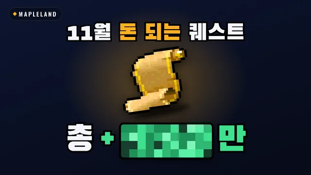
영상으로 보기
이 페이지와 같은 내용을 유튜브 영상으로 정리했어요. 챕터를 누르면 그 부분부터 재생돼요.
일본 7개▶ 영상 01:34
추천 5개 다 사면 보통 +567.5만 (+472.5만 ~ +1,121.5만)추천 + 고려 7개 다 사면 보통 +596.2만 (+341.2만 ~ +1,529.2만)
📍 과거 카에데성
가는 법 대부분의 마을에 있는 NPC 스피넬에게 말을 걸어 버섯신사로 가요. 버섯신사의 우물 포탈 → 큰 나무 포탈을 지나서 크리스탈을 클릭하고 '과거 - 카에데성'을 고르면 돼요.
NPC 위치 도착한 카에데성 맵 오른쪽 큰 성문 앞에 카에데야와 아오이가 있어요. 큰 성문으로 들어간 성문 안 맵에는 지붕 꼭대기에 매부리, 오른쪽 아래에 안즈 공주가 있어요.
가는 길 · 맵 사진 보기 (5장)
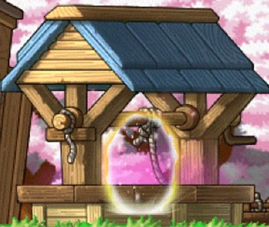
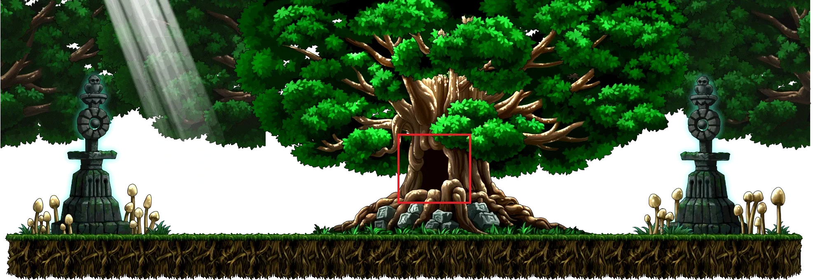
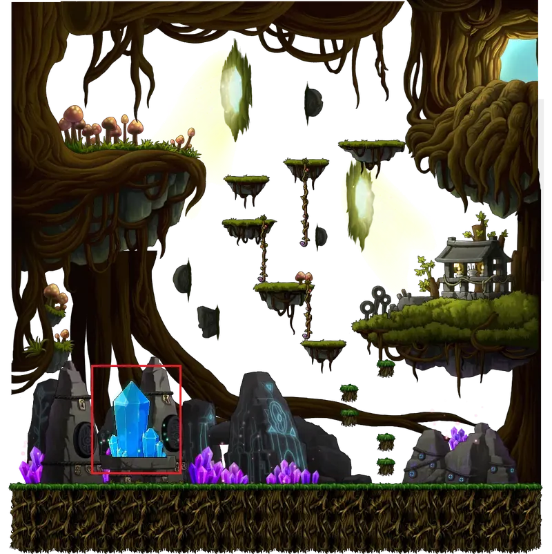
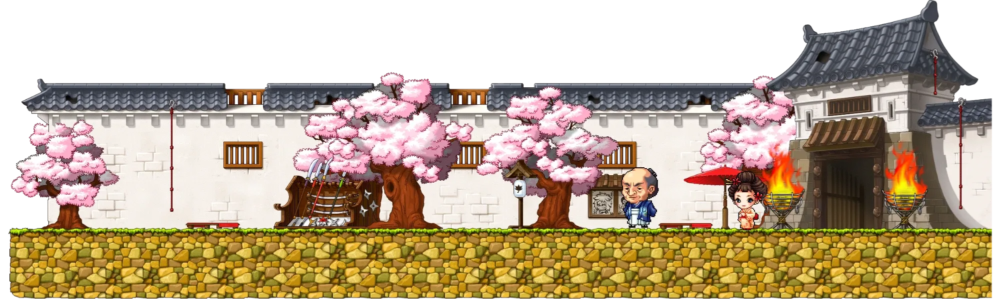
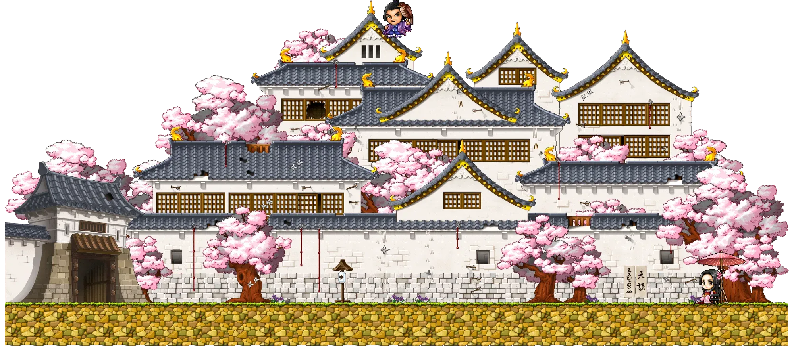
고려 Lv.30 자네도 한 배를 탔군 1 ~ 자네도 한 배를 탔군 2 투체 10·60·100%+귀지 10·60·100%투구 체력 주문서 10/60/100% 중 1개 + 귀 장식 지력 주문서 10/60/100% 중 1개 +31만−81만 ~ +322만
보상
- 10%자네도 한 배를 탔군 1투구 체력 주문서 10/60/100% 중 1개
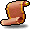
60%100% - 10%60%100%자네도 한 배를 탔군 2귀 장식 지력 주문서 10/60/100% 중 1개
다 사면
+31만
제일 안 좋게 −81만 제일 좋게 +322만
운에 따라
직접 모으면 보통 +119만 (+7만 ~ +410만)
하는 법
- 1편 · 2편 모두 카에데야에게 받고 완료해요.
- 1편 (Lv.30): 중급닌자의 독침 100개
- 2편 (Lv.60): 부러진 사슴 뿔 100개
1편만 하면 거의 남는 게 없고, 진짜 목표는 귀 장식 지력 주문서를 주는 2편이에요. 100%가 나오면 손해, 10%가 나오면 크게 남아서 도박성이 강해요.
고려 Lv.50 매부리와 시라누이 전민 10·60·100%전신 갑옷 민첩 주문서 10/60/100% 중 1개 −2.3만−50.3만 ~ +85.8만
보상
- 10%60%100%전신 갑옷 민첩 주문서 10/60/100% 중 1개
다 사면
−2.3만
제일 안 좋게 −50.3만 제일 좋게 +85.8만
보통은 손해
직접 모으면 보통 +52만 (+4만 ~ +140만)
하는 법
- 성문 안 맵 지붕 꼭대기까지 올라가 매부리에게 받고 완료해요.
- 재료: 산삼 달인물 · 도라지 · 밀짚 나막신 각 50개
밀짚 나막신이 비싸서 재료값이 커요. 10%가 나오면 이득이지만 60%·100%는 손해라 셋 중 둘이 손해예요.
추천 Lv.80 아름다운 공주님의 고민 ~ 성 아래에 핀 그림자 꽃 망토 10·60·100%+장공 10·60·100%망토 주문서 10/60/100% 중 1개 + 장갑 공격력 주문서 10/60/100% 중 1개 +47.5만−45.5만 ~ +596.5만
보상
- 10%60%100%아름다운 공주님의 고민망토 주문서 10/60/100% 중 1개
- 10%60%100%성 아래에 핀 그림자 꽃장갑 공격력 주문서 10/60/100% 중 1개
다 사면
+47.5만
제일 안 좋게 −45.5만 제일 좋게 +596.5만
운에 따라
직접 모으면 보통 +151만 (+58만 ~ +700만)
하는 법
- Lv.80: 성문 안 오른쪽 아래 안즈 공주에게 받기
- 카에데성으로 돌아가 카에데야 오른쪽의 아오이에게 완료
- 다시 안즈 공주에게 돌아오기
- Lv.100: 이어서 성 아래에 핀 그림자 꽃 (여두목의 빗 1개)
공주님의 고민은 망토 주문서 중 무엇이 나와도 이득이에요. 그림자 꽃은 장갑 공격력 10%가 나오면 크게 남아요.
단계별 보기 (퀘스트 2개)
- Lv.80 아름다운 공주님의 고민 — 안즈 공주재료: 레쉬의 털뭉치 500개, 다크 레쉬의 털뭉치 500개보상: 망토 주문서 중 랜덤 1
- Lv.100 성 아래에 핀 그림자 꽃 — 안즈 공주재료: 여두목의 빗 1개보상: 장갑 공격력 주문서 중 랜덤 1
📍 쇼와 마을
가는 법 카에데성 퀘스트를 다 깼으면 카에데성에서 과일 우유(경매장 약 800메소)를 마시고 쇼와 마을로 가요. 쇼와 마을에서 버섯신사로 돌아갈 때는 딸기 우유예요.
NPC 위치 사쿠라는 쇼와 마을 왼쪽 첫 건물 앞, 상처투성이 고양이는 가게 옆 계단 위, 두목 고양이는 오른쪽 끝에 있어요.
가는 길 · 맵 사진 보기 (1장)
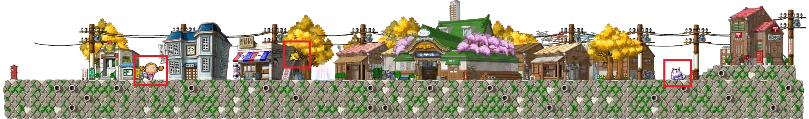
추천 Lv.30 사쿠라와 곰 인형 완드마 10%스태프마 10%하방 10%완드, 스태프 마력 주문서 10% or 방어구 방어력 주문서 10% 중 1 랜덤 +32.5만+30.5만 ~ +37.5만
보상
- 10%10%10%완드, 스태프 마력 주문서 10% or 방어구 방어력 주문서 10% 중 1 랜덤
다 사면
+32.5만
제일 안 좋게 +30.5만 제일 좋게 +37.5만
확정 이득
직접 모으면 보통 +40만 (+38만 ~ +45만)
하는 법
- 쇼와 마을 왼쪽 첫 건물 앞 사쿠라에게 받고 완료해요.
- 재료: 곰인형의 솜뭉치 50개
어떤 보상이 나와도 30만 메소 넘게 남아요. 빅토리아의 '어둠 속의 봉제인형' 연계 선행이라 꼭 깨 두세요.
단계별 보기 (퀘스트 1개)
- Lv.30 사쿠라와 곰 인형 — 사쿠라재료: 곰인형의 솜뭉치 50개보상: 완드, 스태프 마력 주문서 10% or 방어구 방어력 주문서 10% 중 1 랜덤
추천 Lv.40 사쿠라, 고양이 그리고 구슬 (퀴즈 o) 신점 60%투체 60%신발 점프력 주문서 60%, 투구 체력 주문서 60% +81.9만
보상
- 60%60%신발 점프력 주문서 60%, 투구 체력 주문서 60%
다 사면
+81.9만
확정 이득
하는 법
- 상처투성이 고양이(가게 옆 계단 위)에게 펫의 먹이 1개 주기
- 사쿠라와 대화
- 두목 고양이(오른쪽 끝)에게 가기
- 다시 상처투성이 고양이에게 가서 고양이어 배우기
- 두목 고양이 퀴즈 풀기 → 비 구슬 받기
- 사쿠라에게 비 구슬 가져가면 끝
사냥 없이 쇼와 마을 한 맵에서 끝나요. 퀴즈 때 통닭 300개가 필요하니 미리 사 두세요. 보상은 랜덤이 아니라 둘 다 받아요.
두목 고양이 퀴즈 정답 (14문제)
| 문제 | 정답 |
|---|---|
| 수하들이 드롭하지 않는 아이템은? | 수하 B의 명찰 |
| 버섯신사에서 팔고 있는 공격력을 증가시키는 아이템은? | 타코야끼 |
| 다음 중 존재하는 아이템은 무엇인가? | 여우 꼬리 |
| 쇼와마을의 채소가게 주인은 누구인가? | 우미 |
| 신기에 포함되지 않는 것은? | 파리채 |
| 메이플 월드에서 버섯신사로 여행을 시켜주는 NPC의 이름은 무엇인가? | 스피넬 |
| 쇼와 마을 전당포 외관에 적혀 있지 않은 말은? | 장사번성(商売繁盛) |
| 쇼와 영화관 앞에 서 있지 않은 NPC는 누구인가? | 신타 |
| 버섯 신사의 로보가 팔지 않는 라면은? | 버섯 특제 미소라멘 |
| 다음 중 직업이나 레벨 설명이 잘못 짝지어진 것은? | 죽창 - 전사 전용 무기 |
| 불너구리의 드롭 아이템이 아닌 것은? | 단단한 뿔 |
| 버섯 신사에서 '버섯'이라고 히라가나로 쓰여져 있는 곳은 몇 군데? | 6군데 |
| 버섯신사의 석상의 이름은? | 버섯 석상 |
| 존재하지 않는 아이템은 무엇인가? | 수박맛 소프트완드 |
단계별 보기 (퀘스트 7개)
- Lv.40 사쿠라, 고양이와 비 구슬 — 상처투성이 고양이재료: 펫의 먹이 1개
- 사쿠라와 대화 — 상처투성이 고양이 → 사쿠라
- Lv.40 두목 고양이에게 가기 — 사쿠라 → 두목 고양이
- 상처투성이 고양이에게 고양이어 배우기 — 두목 고양이 → 상처투성이 고양이
- 두목 고양이에게 고양이어로 말 걸기 — 상처투성이 고양이 → 두목 고양이
- Lv.40 두목 고양이 퀴즈 (통닭 300개) — 두목 고양이재료: 통닭 300개
- Lv.40 비 구슬을 사쿠라에게 — 두목 고양이 → 사쿠라재료: 비 구슬 1개보상: 신발 점프력 주문서 60% and 투구 체력 주문서 60%
추천 Lv.45 사쿠라와 물개 인형 장공 10%장갑 공격력 주문서 10% +372만
하는 법
- 사쿠라에게 받고 완료해요.
- 재료: 아기 물개 인형 200개
보상이 장갑 공격력 10% 고정이라 일본에서 가장 확실하게 남아요. Lv.45가 되면 꼭 하세요.
단계별 보기 (퀘스트 1개)
- Lv.45 사쿠라와 물개 인형 — 사쿠라재료: 아기 물개 인형 200개보상: 장갑 공격력 주문서 10%
추천 Lv.75 우미의 채소 장아찌 신민 10%신발 민첩 주문서 10% +33.6만
하는 법
- 쇼와 마을 가운데 골목길 포탈로 들어가면 맵 왼쪽 채소가게 앞에 우미가 있어요.
- 재료: 딥 버푼의 돌조각 80개
동선 사진 보기 (1장)
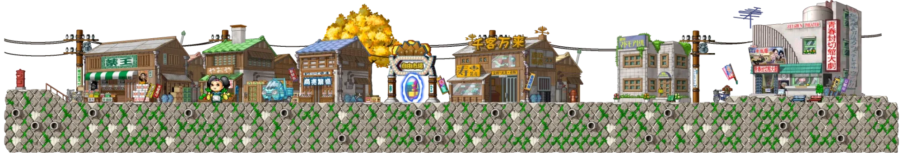
단계별 보기 (퀘스트 1개)
- Lv.75 우미의 채소 장아찌 — 우미재료: 딥 버푼의 돌조각 80개보상: 신발 민첩 주문서 10%
빅토리아 아일랜드 6개▶ 영상 08:44
추천 3개 다 사면 보통 +463.6만 (+373.7만 ~ +828.2만)추천 + 고려 6개 다 사면 보통 +715.1만 (+431.8만 ~ +2,609.3만)
미리 받아 두기 뒤 챕터 퀘스트의 선행을 같이 받아 두면 편해요. 헤네시스 장로 스탄에게 '장로스탄의 편지'를 받아 두면 지구방위본부 '훈이의 이 통증'으로, 엘리니아 아래쪽 오른편 요정 윙에게 '새로운 세계로'를 받아 두면 오르비스 '크리엘 도와주기'로 이어져요. 필요한 켈벨로스의 눈물은 윙이 바로 줘요.
추천 Lv.20 피아와 파란버섯 투방 10·60·100%투구 방어력 주문서 10/60/100% 중 1개 +29만−10.5만 ~ +29만
보상
- 100%60%10%투구 방어력 주문서 10/60/100% 중 1개
다 사면
+29만
제일 안 좋게 −10.5만 제일 좋게 +29만
운에 따라
직접 모으면 보통 +40만 (+5,000 ~ +40만)
하는 법
- 헤네시스 마을의 빨간 포탈로 헤네시스 공원에 들어가면 피아가 있어요.
- 재료: 파란버섯의 갓 · 초록버섯의 갓 각 40개
10%나 60%가 나오면 이득, 100%가 나오면 조금 손해예요.
동선 사진 보기 (1장)
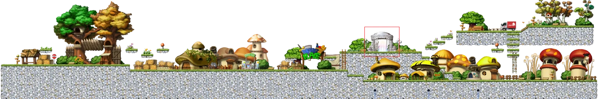
추천 Lv.25 제인과 와일드보어 ~ 연금술사 제인 1~3 폴암공 60%완드마 60%+장공 10·60%무기 주문서 60% 중 랜덤 1개 + 장갑 공격력 주문서 10/60% 중 1개 +115.9만+90.9만 ~ +450.9만
재료 (경매장)
- 뿔버섯의 갓 ×1008,800
- 와일드보어의 송곳니 ×8020만
- 맑은 물 ×11,650 · 상점
- 멜러디의 실험용 개구리 ×509.2만
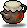
이상한 느낌의 약 ×13022.8만- 드레이크의 피 ×34.2만
- 머쉬맘의 포자 ×16,000
- 용의 가죽 ×209.6만
- 달의 돌 ×18만
- 고목 나무의 수액 ×101.8만
합계 77.1만메소
보상
- 60%60%제인과 와일드보어무기 주문서 60% 중 랜덤 1개
- ×10연금술사 제인 1엘릭서 10개
- ×15연금술사 제인 2파워엘릭서 15개
- 60%10%연금술사 제인 3장갑 공격력 주문서 10/60% 중 1개
다 사면
+115.9만
제일 안 좋게 +90.9만 제일 좋게 +450.9만
확정 이득
직접 모으면 보통 +192.8만 (+167.8만 ~ +527.8만)
하는 법
- 제인은 리스항구 티켓 건물 옆에 있고, 네 퀘스트 모두 제인에게 받고 완료해요.
- 제인과 와일드보어 (Lv.25): 뿔버섯의 갓 100개 · 와일드보어의 송곳니 80개
- 연금술사 제인 1 · 2: 엘릭서 · 파워 엘릭서를 줘서 조금 손해지만 3을 받으려면 거쳐야 해요.
- 연금술사 제인 3: 용의 가죽 20개 · 달의 돌 1개 · 고목 나무의 수액 10개
3까지 깨면 제인의 상점도 열려요.
단계별 보기 (퀘스트 4개)
- Lv.25 제인과 와일드보어 — 제인재료: 뿔버섯의 갓 100개, 와일드보어의 송곳니 80개보상: 무기 주문서 60% 중 랜덤 1개
- Lv.40 연금술사 제인 1 — 제인보상: 엘릭서
- Lv.40 연금술사 제인 2 — 제인보상: 파워엘릭서
- Lv.40 연금술사 제인 3 — 제인보상: 장갑 공격력 주문서 60%, 10% 중 랜덤 1개
고려
Lv.42
심심해요 ~ 이카루스의 하늘을 나는 약
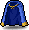
이카루스의 망토(회피/이속/점프) 중 1개 랜덤
+44.6만−35.4만 ~ +104.6만
재료 (경매장)
- 슬라임의 방울 ×109.3만
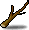
나뭇가지 ×707만- 물컹물컹한 액체 ×705,600
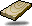
가공된 나무 ×103만- 스티지의 날개 ×505.5만
 뻣뻣한 깃털 ×502,500
뻣뻣한 깃털 ×502,500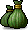
악어가죽 주머니 ×10직접 사냥- 식탁보 ×10011만
- 마녀풀의 잎사귀 ×20직접 사냥
- 이상한 느낌의 약 ×508.8만
- 비상의 비약 ×1직접 사냥
합계 45.4만메소
보상
- 이카루스의 망토(회피/이속/점프) 중 1개 랜덤
다 사면
+44.6만
제일 안 좋게 −35.4만 제일 좋게 +104.6만
운에 따라
직접 모으면 보통 +90만 (+10만 ~ +150만)
하는 법
- 엘리니아 요정 윙과 커닝시티 이카루스를 오가며 Lv.10부터 Lv.42까지 퀘스트 8개를 깨요.
- 재료는 대부분 경매장에서 사고, 세 가지만 직접 구해요.
- 악어가죽 주머니: 커닝시티 빨간 하수구 → 방황의 늪 1에서 리게이터
- 마녀풀의 잎사귀: 방황의 늪 1 곳곳의 보라색 꽃을 오른쪽에서 왼쪽으로 기본 공격
- 비상의 비약: 요정 윙에게 받아서 이카루스에게
보상은 이카루스의 망토 회피 · 이동속도 · 점프 중 하나예요. 회피나 이동속도면 이득, 점프가 나오면 손해예요.
단계별 보기 (퀘스트 8개)
- Lv.10 숙제 좀 도와줘 — 요정 윙
- Lv.10 심심해요 1 — 이카루스
- Lv.10 심심해요 2 — 이카루스
- Lv.32 이카루스의 행글라이더 — 이카루스
- Lv.37 이카루스의 열기구 — 이카루스
- Lv.42 요정 윙을 찾아서… — 이카루스 → 요정 윙
- Lv.42 하늘을 나는 약의 재료 — 요정 윙
- Lv.42 이카루스의 하늘을 나는 약 — 요정 윙 → 이카루스재료: 비상의 비약 1개보상: 이카루스의 망토(회피/이속/점프) 중 1개 랜덤
추천 Lv.52 악어 퇴치 1 ~ 악어 퇴치 2 직업별무기 10%+망힘 60%망지 60%+2직업별 무기 주문서 10% 중 택 1 + 망토 힘·지력·민첩·행운 주문서 60% 중 골라서 1개 +318.7만+293.3만 ~ +348.3만
재료 (경매장)
- 주황버섯의 갓 ×406.8만
- 버섯의 포자 ×102만
- 장난감 칼 ×1직접 사냥
- 이얀의 편지 ×1직접 사냥
- 주니어 네키의 가죽 ×201.8만
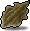
크로코의 가죽 ×501.1만
합계 11.7만메소
보상
- 10%악어 퇴치 1직업별 무기 주문서 10% 중 택 1
- 60%60%60%60%악어 퇴치 2망토 힘·지력·민첩·행운 주문서 60% 중 골라서 1개
다 사면
+318.7만
제일 안 좋게 +293.3만 제일 좋게 +348.3만
확정 이득
직접 모으면 보통 +330.4만 (+305만 ~ +360만)
하는 법
- 선행: 헤네시스 브루스 '버섯 몬스터를 연구하는 이유' → 페리온 가운데 이얀 '스텀프는 무서워' (스텀프는 페리온 오른쪽 포탈 → 동쪽 길목 → 동쪽 바위산 1)
- 브루스에게 '내 딸을 찾고 싶어'를 받아 이얀에게 갔다가 다시 브루스에게 오면 선행 끝
- 악어 퇴치 1: 방황의 늪 1에서 리게이터 250마리 · 주니어 네키 40마리 → 직업별 무기 공격력 10% 골라서 1개
- 악어 퇴치 2: 방황의 늪 1에서 오른쪽으로 쭉 가면 나오는 위험한 크로코에서 크로코 120마리 (위험한 크로코 2가 크로코만 나와서 편해요) → 망토 힘·지력·민첩·행운 60% 골라서 1개
재료값이 거의 안 들고 사냥만 하면 300만 메소 가까이 남는 효자 퀘스트예요. Lv.52가 되면 꼭 하세요.
단계별 보기 (퀘스트 6개)
고려 Lv.55 어둠 속의 봉제인형 ~ 어둠으로부터의 해방 하방 10%+하방 10%++투구 · 상의 · 하의 · 망토 · 방패 주문서 10% 중 1개 + 전신 · 장갑 · 하의 · 신발 · 망토 · 귀고리 주문서 10% 중 1개 + 두손검 · 두손도끼 · 두손둔기 · 망토 · 방패 주문서 10% 중 1개 + 무기 공격력 · 장갑 공격력 주문서 10% 중 1개 +139.4만+51.4만 ~ +1,579.4만
Lv.55 · 70 · 90 · 90 어둠 속의 봉제인형 → 어둠에 사로잡힌 영혼 → 영혼의 행방 → 어둠으로부터의 해방
제이 (헤네시스) · 보좌관 티군 (루디브리엄: 에오스탑 입구) · 사쿠라 ([일본] 쇼와 마을)
재료 (경매장)
- 메이플 고서 上 ×1직접 사냥
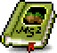
메이플 고서 中 ×1직접 사냥- 메이플 고서 下 ×1직접 사냥
- 명예의 훈장 ×1직접 사냥
- 좀비테니 인형 ×1004만
- 자유로운 영혼 ×10065만
- 봉인된 테니인형 ×1003만
- 속박의 굴레 ×10030만
합계 102만메소
보상
- 10%어둠 속의 봉제인형투구 · 상의 · 하의 · 망토 · 방패 주문서 10% 중 1개
- 10%어둠에 사로잡힌 영혼전신 · 장갑 · 하의 · 신발 · 망토 · 귀고리 주문서 10% 중 1개
- 영혼의 행방엘릭서
- 꼭두각시엘릭서
- 건드려버린 마음두손검 · 두손도끼 · 두손둔기 · 망토 · 방패 주문서 10% 중 1개
- 어둠으로부터의 해방무기 공격력 · 장갑 공격력 주문서 10% 중 1개
다 사면
+139.4만
제일 안 좋게 +51.4만 제일 좋게 +1,579.4만
확정 이득
직접 모으면 보통 +241.4만 (+153.4만 ~ +1,681.4만)
하는 법
- 선행 1: 일본 '사쿠라와 곰 인형'
- 선행 2: 헤네시스 제이 '메이플 고서를 되찾아라' — 고서 上·中·下 세 권 (순서는 中 → 上 → 下 추천)
- 中: 엘리니아 맨 위 포탈로 마법 도서관 → 빨간 상자 부수기
- 上: 엘리니아 → 오르비스 배 선실 빨간 상자 (오르비스에 가기 싫으면 재접속하면 엘리니아로 돌아와요)
- 下: 루디브리엄 시간의 길 2·3 크로노스
- 세 권을 모아 루디브리엄 → 왼쪽 → 루디브리엄 마을 → 에오스탑 입구 보좌관 티군에게 명예의 훈장을 받고 제이에게
- Lv.55: 제이 → 보좌관 티군 → 좀비테니 인형 100개를 제이에게
- Lv.70: 자유로운 영혼 100개
- Lv.90: 헤네시스 제이 ↔ 쇼와 마을 사쿠라를 오가며 봉인된 테니인형 · 속박의 굴레 각 100개를 사쿠라에게, 마지막으로 제이에게
레벨 55부터 90까지 이어지는 긴 연계라 고려로 넣었어요. 10% 주문서를 모두 네 장 받아요.
동선 사진 보기 (5장)
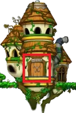
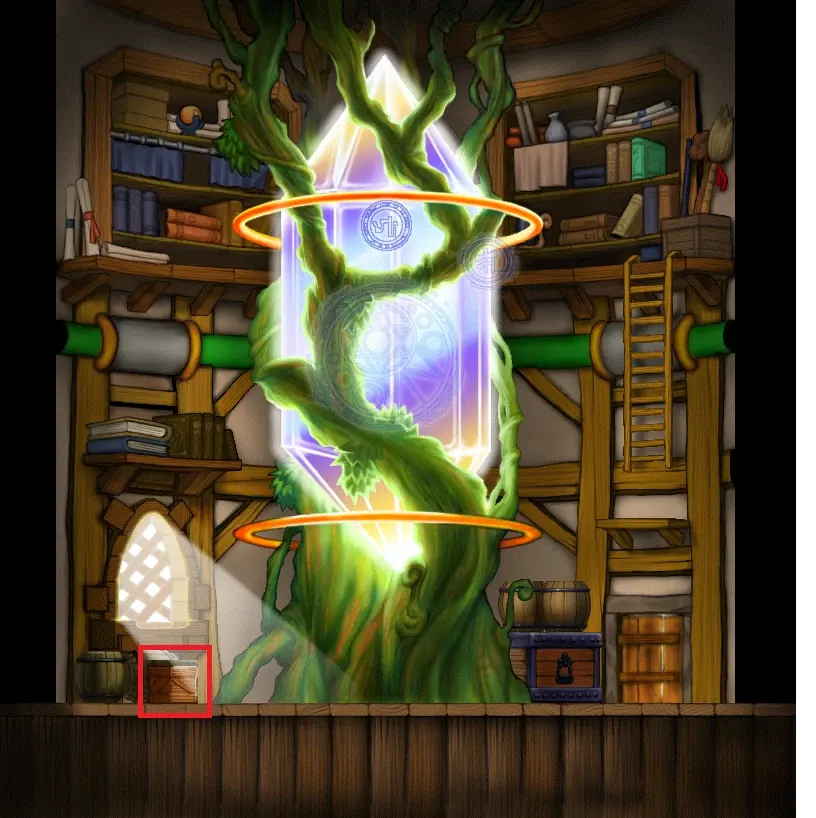
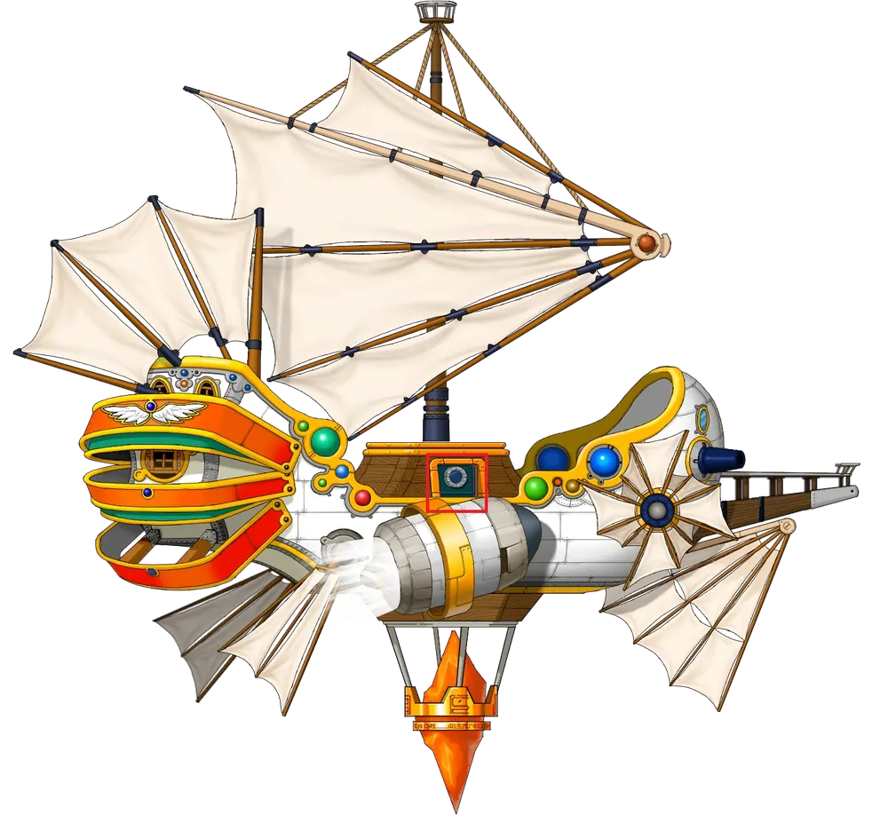
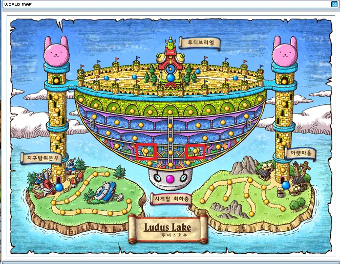
단계별 보기 (퀘스트 9개)
- Lv.25 메이플 고서를 되찾아라 1 — 제이 → 보좌관 티군
- Lv.25 메이플 고서를 되찾아라 2 — 보좌관 티군 → 제이재료: 명예의 훈장 1개
- Lv.55 어둠 속의 봉제인형 — 제이 → 보좌관 티군
- Lv.55 어둠 속의 봉제인형 — 보좌관 티군 → 제이재료: 좀비테니 인형 100개보상: 투구 / 상의 / 하의 / 망토 / 방패 주문서 10% 중 1개 랜덤
- Lv.70 어둠에 사로잡힌 영혼 — 제이재료: 자유로운 영혼 100개보상: 전신 / 장갑 / 하의 / 신발 / 망토 주문서 10% 중 1개 랜덤
- Lv.90 영혼의 행방 — 제이 → 사쿠라보상: 엘릭서
- Lv.90 꼭두각시 — 사쿠라 → 제이보상: 엘릭서
- Lv.90 건드려버린 마음 — 제이 → 사쿠라보상: 10% 주문서 랜덤 1개
- Lv.90 어둠으로부터의 해방 — 사쿠라 → 제이보상: 10% 주문서 랜덤 1개
고려 Lv.60 유적 발굴단의 공고문 직업별무기 10%직업별 무기 주문서 10% 중 택 1 +67.5만+42.1만 ~ +97.1만
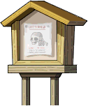
보상
- 10%직업별 무기 주문서 10% 중 택 1
다 사면
+67.5만
제일 안 좋게 +42.1만 제일 좋게 +97.1만
확정 이득
직접 모으면 보통 +70.4만 (+45만 ~ +100만)
하는 법
- 페리온 동쪽 바위산 1에서 더 오른쪽 바위길 3 → 위쪽 빨간 포탈 → 유적 발굴지 1·2·3 → 유적발굴단 캠프
- 캠프 게시판에서 받고, 완료는 샨에게
- 스켈레톤 사병 200 · 장교 100 · 지휘관 40마리
- 유적의 무덤 1·2를 지나 유적의 무덤 3의 빨간 입구 → 제2군영에서 사병 · 장교
- 사병을 다 잡으면 유적의 무덤 4에서 장교 · 지휘관
보상은 직업별 무기 공격력 10% 골라서 1개라 직업마다 남는 돈이 달라요. 사냥이 340마리라 고려로 넣었어요.
오르비스 4개▶ 영상 16:44
추천 4개 다 사면 보통 +115.8만 (+113.8만 ~ +363.8만)추천 + 고려 4개 다 사면 보통 +115.8만 (+113.8만 ~ +363.8만)
가는 법 엘리니아에서 오르비스로 가는 배는 15분마다 떠서 기다려야 할 수 있어요. 엘리니아에서 에델슈타인을 거쳐 가면 기다리는 시간이 없어서 이쪽을 추천해요.
미리 받아 두기 오르비스에 도착하면 리사에게 '리사의 소개'를 미리 받아 두세요. 엘나스 '스카두르의 새로운 모피'의 선행이에요.
NPC 위치 봉달이는 오르비스 가운데 아래, 리사는 그 오른쪽에 있어요. 요정 크리엘은 오르비스 잡화상점에 있어요.
가는 길 · 맵 사진 보기 (1장)
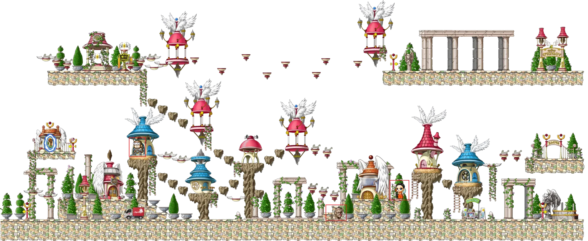
추천 Lv.30 외로운 봉달이 ~ 리사의 특수 치료제 펫장비이속 60%펫장비 이동속도 주문서 60% +56.5만
재료 (경매장)
- 단단한 뿔 ×803.6만
- 뻣뻣한 깃털 ×15750
- 동물의 가죽 ×5500
- 주황 포션 ×406,400 · 상점
 파란 포션 ×204,000 · 상점
파란 포션 ×204,000 · 상점- 해독제 ×1250 · 상점
- 페어리의 더듬이 ×11,500
합계 4.9만메소
보상
- ×10요정의 뿔피리뿔피리, 블루 문, 만병통치약 10개
- 60%리사의 특수치료제 Ⅱ펫장비 이동속도 주문서 60%
다 사면
+56.5만
확정 이득
직접 모으면 +60.4만
하는 법
- 오르비스 가운데 아래 봉달이에게 시작하고, 나머지는 대부분 오른쪽 리사에게 받고 완료해요.
- 요정의 뿔피리: 단단한 뿔 80개 · 뻣뻣한 깃털 15개 · 동물의 가죽 5개
- 리사의 특수 치료제: 주황 포션 40개 · 파란 포션 20개 · 해독제 1개 · 페어리의 더듬이 1개
재료값이 5만 메소도 안 들고 보상이 고정이라 꼭 하세요.
추천 Lv.30 바다의 풍경 신점 10·60%신이속 10·60%신발 점프력·이동속도 주문서 10/60% 중 1개 +38만+38만 ~ +170만
보상
- 10%60%60%10%신발 점프력·이동속도 주문서 10/60% 중 1개
다 사면
+38만
제일 안 좋게 +38만 제일 좋게 +170만
확정 이득
하는 법
- 오르비스 잡화상점 요정 크리엘에게 받기
- 아쿠아리움 뮤즈에게 사진첩 퀘스트 받기
- 엘나스 알케스터에게 눈송이 결정 100개 → 눈결정의 마법구 (눈송이 결정은 오르비스탑 7층 리티, 3층 다크 리티)
- 마법구를 뮤즈에게 → 아쿠아로드 사진첩
- 사진첩을 크리엘에게 가져가면 완료
오르비스 ↔ 엘나스는 마법석 활성화 주문서로 오르비스 마법석을 타면 빨라요. 오르비스 → 아쿠아리움은 오르비스탑 지하 1·2층 → 바다나들목에서 마을 귀환 주문서, 또는 학으로 무릉 → 백초마을 → 맨 왼쪽 포탈 돌고래. 뮤즈에게 받은 사진첩을 한 번 버리고 다시 받으면 히든 퀘스트 '잃어버린 사진첩'이 나와요 (스페셜 퀘스트용).
동선 사진 보기 (3장)
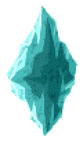
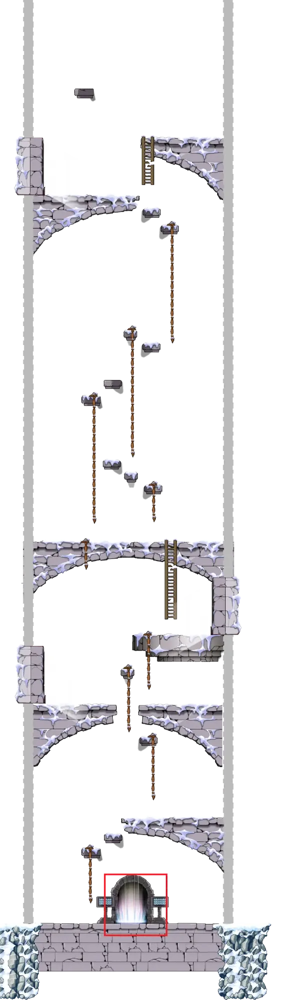
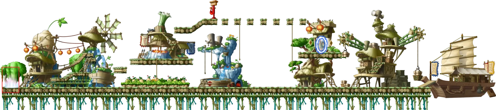
추천 Lv.35 네로를 지켜라 펫장비이속 10·60%펫장비 이동속도 주문서 10/60% 중 1개 −1.3만−1.3만 ~ +53.8만
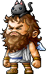
보상
- 10%60%펫장비 이동속도 주문서 10/60% 중 1개
다 사면
−1.3만
제일 안 좋게 −1.3만 제일 좋게 +53.8만
보통은 손해
직접 모으면 보통 +1만 (+1만 ~ +56만)
하는 법
- 오르비스 공원 에릭손에게 받아요.
- 선행 '네로의 목걸이': 금방울(캐시샵 펫 탭) · 빨간 리본끈(캐시샵 기타 탭 게임 칸), 둘 다 1메소
- 주니어 샐리온 · 주니어 라이오너 · 주니어 그류핀 각 50마리 + 단단한 뿔 50개
- 오르비스 → 구름공원 1 → 위쪽 포탈 '세 가지 빛 정원으로 가는 길': 빨간 포탈 샐리온, 주황 포탈 라이오너, 파란 포탈 그류핀
10%가 나오면 조금 손해, 60%가 나오면 50만 메소 넘게 남아요.
동선 사진 보기 (3장)
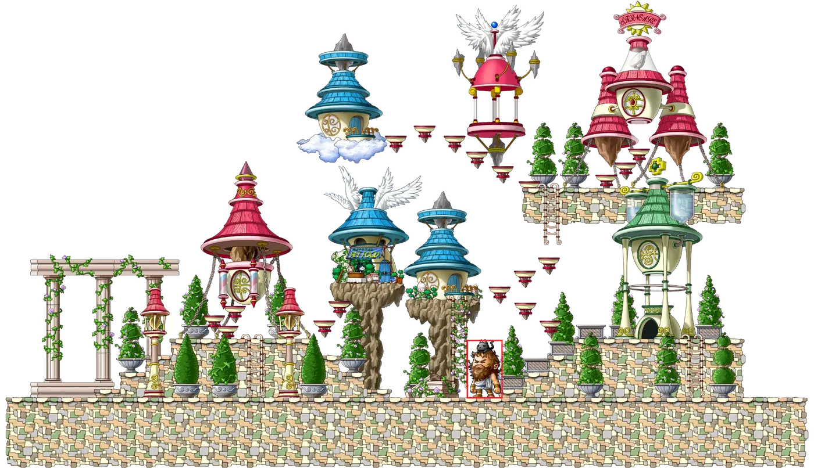
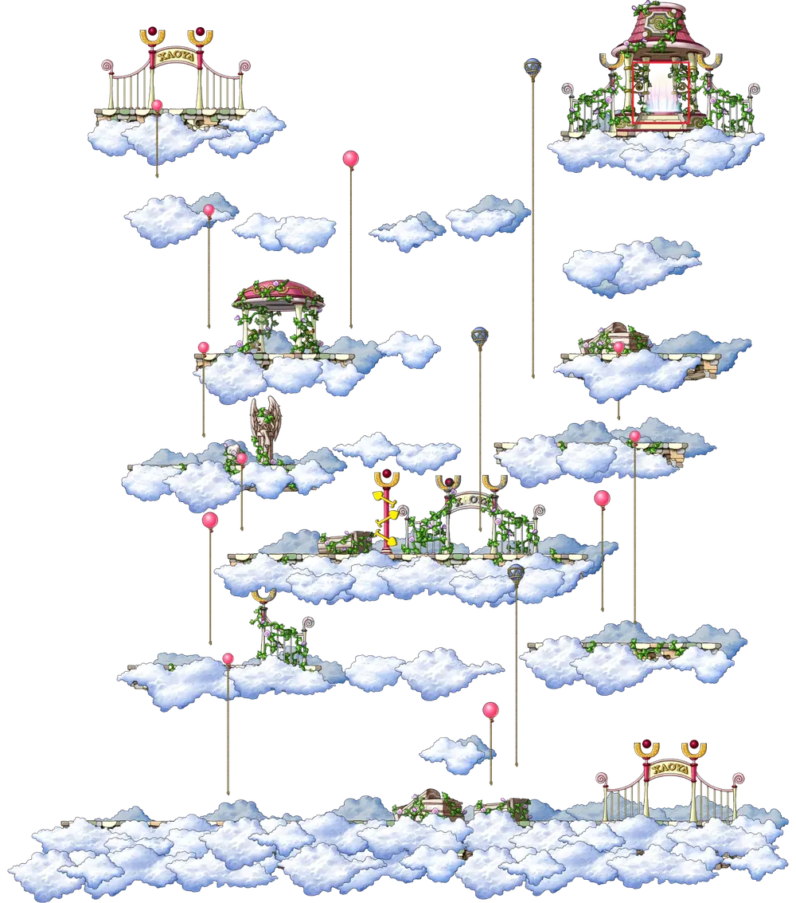
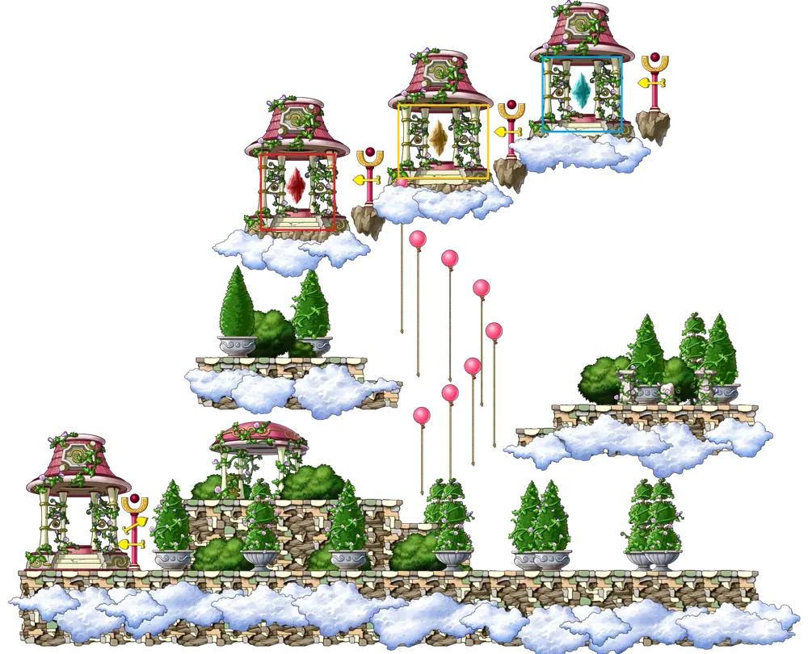
추천 Lv.40 크리엘 도와주기 무기 60%장공 60%무기 주문서 60% or 장갑공격력 주문서 60% 중 1개 랜덤 +22.5만+20.5만 ~ +83.5만
보상
- 60%60%무기 주문서 60% or 장갑공격력 주문서 60% 중 1개 랜덤
다 사면
+22.5만
제일 안 좋게 +20.5만 제일 좋게 +83.5만
확정 이득
직접 모으면 보통 +39만 (+37만 ~ +100만)
하는 법
- 빅토리아에서 요정 윙에게 받아 둔 '새로운 세계로'가 선행이고, 오르비스 잡화상점 요정 크리엘에게 완료해요.
- 재료: 단단한 뿔 200개 · 네펜데스의 씨앗 50개
- 빈 물약병 20개: 오르비스 · 오르비스 공원 곳곳의 상자를 기본 공격으로 부수기
엘나스 3개▶ 영상 21:16
추천 3개 다 사면 보통 +100.2만 (+87.2만 ~ +541.2만)추천 + 고려 3개 다 사면 보통 +100.2만 (+87.2만 ~ +541.2만)
가는 법 오르비스 마법석(마법석 활성화 주문서)으로 오르비스탑 1층에 내려가서, 눈덮인 언덕에서 마을 귀환 주문서를 쓰면 엘나스예요.
NPC 위치 폭스상사는 엘나스 마켓 앞, 스카두르는 폭스상사 왼쪽, 샤모스는 장로의 관저 안 아래층에 있어요.
추천 Lv.40 찰리중사의 행방 신점 10·60%신이속 10·60%신발 점프력·이동속도 주문서 10/60% 중 1개 +34.6만+34.6만 ~ +166.6만
Lv.40 찰리중사의 행방
폭스상사 (엘나스산맥: 엘나스) · 찰리중사 (스카이로드: 오르비스) · 브라보하사 (엘나스산맥: 차디찬벌판) · 이지병장 (스카이로드: 구름공원6)
보상
- 60%10%60%10%신발 점프력·이동속도 주문서 10/60% 중 1개
다 사면
+34.6만
제일 안 좋게 +34.6만 제일 좋게 +166.6만
확정 이득
직접 모으면 보통 +38만 (+38만 ~ +170만)
하는 법
- 알파소대 연락망으로도 알려진 연계예요. 엘나스 마켓 앞 폭스상사에게 받기
- 오르비스 찰리중사에게 오리할콘 2개
- 엘나스 오른쪽 포탈 → 빙판 조심 1·2 → 차가운 벌판 1 → 차가운 벌판 2 오른쪽 아래 빨간 포탈 → 차디찬 벌판 브라보하사에게 아다만티움 2개
- 오르비스 → 구름공원 1~5 → 구름공원 6 이지병장에게 사파이어 2개
- 그동안 모인 고대문서 조각 3개를 폭스상사에게 가져가면 완료
동선 사진 보기 (3장)
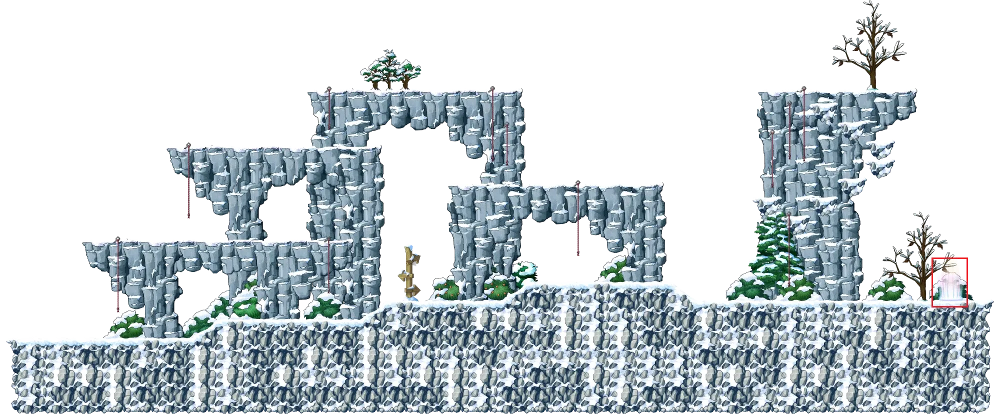
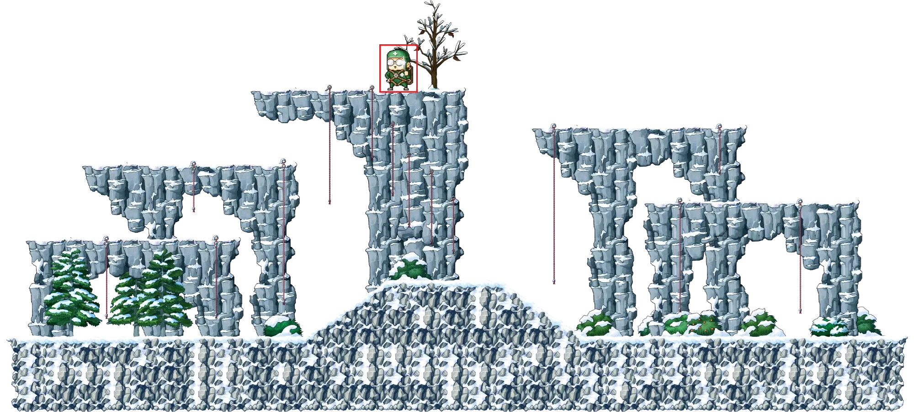
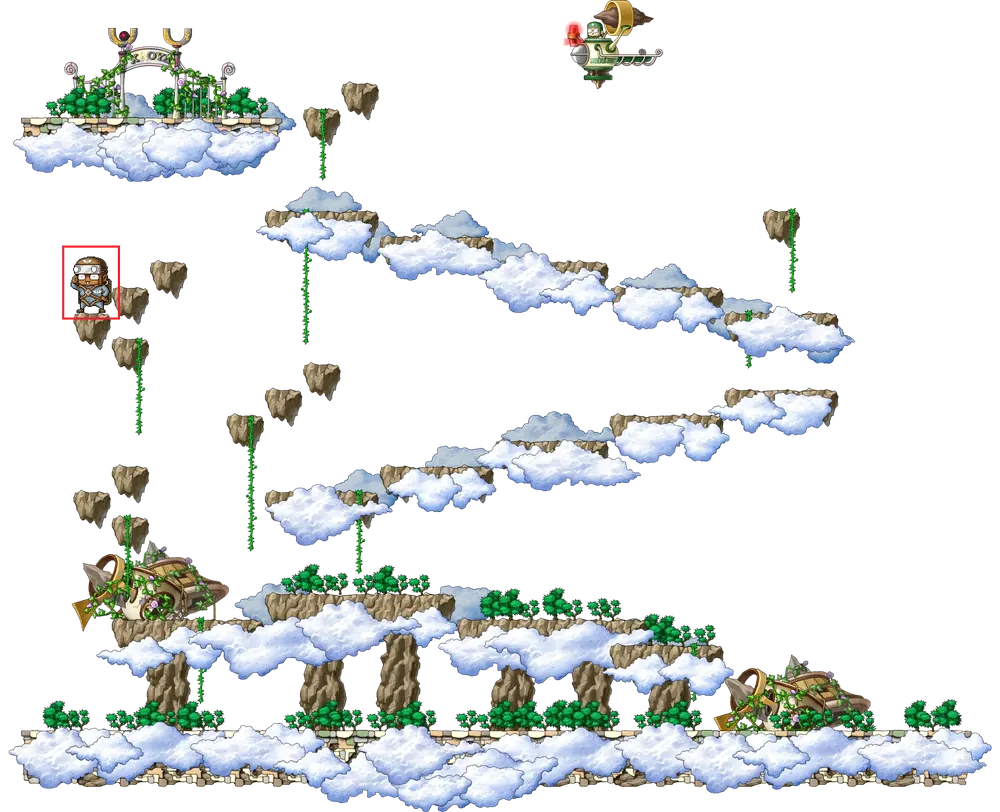
추천 Lv.55 샤모스의 부탁 신점 10·60%신이속 10·60%신발 이동속도 · 점프력 · 민첩성 주문서 10/60% 중 1개 +39만+38만 ~ +170만
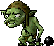
보상
- 60%10%60%10%신발 이동속도 · 점프력 · 민첩성 주문서 10/60% 중 1개
다 사면
+39만
제일 안 좋게 +38만 제일 좋게 +170만
확정 이득
하는 법
- 엘나스 장로의 관저에 들어가 아래로 내려가면 샤모스가 있어요.
- 샤모스에게 받은 다음 페리온 왼쪽 위 만지와 대화를 끝까지 진행
- 엘나스로 돌아와 쿨리 좀비를 잡아 어둠의 계약서 1개 (마을 총알택시 → 죽은 나무의 숲 4가 편해요)
- 어둠의 계약서를 샤모스에게 가져가면 완료 (인기도 −2)
재료값이 하나도 안 들어서 Lv.55가 되면 바로 하세요.
단계별 보기 (퀘스트 2개)
- Lv.55 샤모스의 부탁 — 샤모스 → 만지
- Lv.55 샤모스의 부탁 — 만지 → 샤모스재료: 어둠의 계약서 1개보상: 신발 주문서 10%, 60% 중 1개 랜덤
추천 Lv.60 리사의 소개 ~ 스카두르의 새로운 모피 전방 60%전민 60%전행 60%전지 60%전신 갑옷 방어력·민첩·행운·지력 주문서 60% 중 1개 +26.6만+14.6만 ~ +204.6만
재료 (경매장)
합계 25.4만메소
보상
- 60%60%60%60%전신 갑옷 방어력·민첩·행운·지력 주문서 60% 중 1개
다 사면
+26.6만
제일 안 좋게 +14.6만 제일 좋게 +204.6만
확정 이득
직접 모으면 보통 +52만 (+40만 ~ +230만)
하는 법
- 오르비스 리사에게 미리 받아 둔 '리사의 소개'가 선행이에요.
- 엘나스 폭스상사 왼쪽 스카두르에게 받고 완료
- 재료: 헥터의 꼬리 · 화이트팽의 꼬리 각 250개, 사파이어의 원석 50개, 예티의 뿔 80개
전신 갑옷 행운이나 지력 60%가 나오면 200만 메소가 넘어요.
루디브리엄 3개▶ 영상 24:37
추천 2개 다 사면 보통 +239만 (+217만 ~ +631만)추천 + 고려 3개 다 사면 보통 +277만 (+255만 ~ +801만)
이동 팁 에오스탑을 많이 오르내리니 이동 팁부터: 에오스탑 100층 · 71층 · 41층 · 1층의 에오스의 돌에 에오스의 돌 활성화 주문서(경매장 약 2,500메소)를 쓰면 층 사이를 바로 이동해요. 마을 귀환 주문서는 56층 위에서 쓰면 루디브리엄, 55층 아래에서 쓰면 지구방위본부로 가요. 루디브리엄 워프 캡슐(약 9만 메소)은 루디브리엄 지역이나 지구방위본부 어디서 써도 루디브리엄으로 돌아가요.
가는 길 · 맵 사진 보기 (1장)
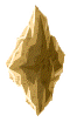
고려 Lv.30 정비 부품의 행방 신이속 10·60%신점 10·60%신발 이동속도·점프력 주문서 10/60% 중 1개 +38만+38만 ~ +170만
보상
- 60%10%60%10%신발 이동속도·점프력 주문서 10/60% 중 1개
다 사면
+38만
제일 안 좋게 +38만 제일 좋게 +170만
확정 이득
하는 법
- 루디브리엄 시계탑 아래 포탈 → 테라스홀 빨간 포탈 → 장난감공장
- 메인공정 1에서 쭉 왼쪽 → 1공정 3구역 · 2구역 → 1구역 조교 챙에게 받기
- 장난감공장 4구역 점프맵의 상자들에서 기계 부품 10개 찾기 (거미가 위아래로 움직이고, 컨베이어는 빨간 박스면 오른쪽 · 파란 박스면 왼쪽)
재료값은 안 들지만 점프맵이라 고려로 넣었어요.
동선 사진 보기 (3장)
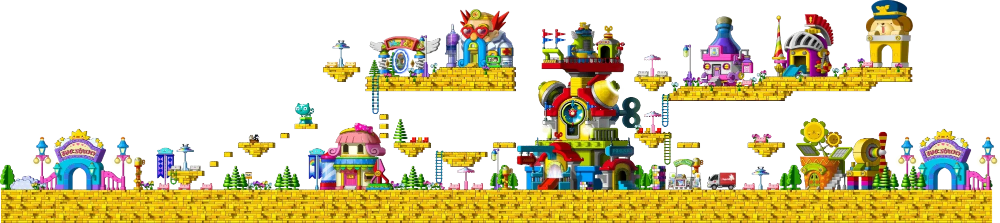
단계별 보기 (퀘스트 1개)
- Lv.30 정비 부품의 행방 — 조교 챙재료: 기계 부품 10개보상: 신발 이동속도, 점프력 60%, 10% 주문서 중 랜덤 1개
추천 Lv.33 장난감 병정의 호두 ~ 망가진 시계탑 단검공 60%아대공 60%직업별 무기 공격력 주문서 60% 중 1개 선택 +59만+39만 ~ +90만
Lv.33 장난감 병정의 호두 ~ 망가진 시계탑
장난감병정 델브 (에오스탑: 에오스탑100층) · 장난감병정 올슨 (에오스탑: 에오스탑100층) · 괘종시계 (루디브리엄성: 잃어버린시간<1>)
보상
- 60%60%직업별 무기 공격력 주문서 60% 중 1개 선택
다 사면
+59만
제일 안 좋게 +39만 제일 좋게 +90만
확정 이득
하는 법
- 에오스탑 100층 장난감병정 델브에게 받고, 95 · 96층 블랙 라츠를 잡아 맛있는 호두 20개
- 같은 층 장난감병정 올슨에게 말을 걸면 인형의 집으로 가요. 손잡이가 평평한 집 말고 입체적인 집이 정답
- 루디브리엄성 잃어버린 시간 1의 괘종시계에게 가기. 바로 전 맵 시간의 소용돌이에서 틱톡을 잡으면 만능 시계 태엽
- 태엽을 괘종시계에게 → 올슨에게 가면 완료
재료가 전부 직접 모으는 퀘스트템이라 재료값이 안 들어요. 보상은 직업별 무기 공격력 60% 골라서 1개예요.
추천 Lv.40 에오스탑 청소 ~ 에오스탑의 평화 활공 60%완드마 60%+2+장공 10·60%무기 공격력 주문서 60% 중 랜덤 1개 + 장갑 공격력 주문서 10/60% 중 1개 +180만+178만 ~ +541만
재료
재료 없음
보상
- ×50×50에오스탑 청소주황 포션 알약 50개, 파란 포션 알약 50개
- ×50×50에오스탑 깊은곳 청소하얀 포션 알약 50개, 마나 엘릭서 알약 50개
- ×50에오스탑 외부 청소엘릭서 50개
- 60%60%60%60%에오스탑의 위협무기 공격력 주문서 60% 중 랜덤 1개
- 60%10%에오스탑의 평화장갑 공격력 주문서 10/60% 중 1개
다 사면
+180만
제일 안 좋게 +178만 제일 좋게 +541만
확정 이득
하는 법
- 루디브리엄 마을 오른쪽 위 마르셀에게 받고 완료, 재료 없이 사냥만 해요.
- 1. 100층 라츠 50마리
- 2. 93 · 94층 트릭스터 · 블랙 라츠 각 40마리
- 3. 59층 핑크세이버 · 7층 트위터 각 25마리 (여기까지 포션 알약 · 엘릭서)
- 4. 5층 킹 블록골렘 12마리 · 블록골렘 20마리 → 무기 공격력 60% 중 1개
- 5. 롬바드: 8층 숨겨진 탑 포탈로 들어가면 위나 아래에 있어요 → 장갑 공격력 60% · 10% 중 1개
롬바드가 없으면 채널을 옮겨 가며 찾고, 블록골렘을 한두 마리씩 잡아 젠을 돌려 보세요. Lv.40이 되면 꼭 하세요.
단계별 보기 (퀘스트 5개)
지구방위본부 2개▶ 영상 29:09
추천 1개 다 사면 +167.4만추천 + 고려 2개 다 사면 보통 +363.9만 (+215.9만 ~ +853.9만)
추천 Lv.31 훈이의 이 통증 ×3펫장비 이동속도 주문서 60% 3개 +167.4만
Lv.31 훈이의 이 통증
장로 스탄 (헤네시스) · 김박사 (지구방위본부: 사령실) · 철이 (지구방위본부: 격납고) · 훈이 (루더스호수: 로스웰초원3) · 건이 (로스웰초원5)
보상
- ×3펫장비 이동속도 주문서 60% 3개
다 사면
+167.4만
확정 이득
직접 모으면 +167.9만
하는 법
- 헤네시스 장로 스탄에게 봉인된 편지 받기
- 사령실 워프캡슐(루디브리엄 경매장 약 8천 메소)로 사령실 → 김박사에게 편지 전달, '신형 로봇의 설계도'를 받으면 설계도를 줘요
- 사령실에서 나와 1번 포탈 타고 위로 → 철이. 이쯤에서 우주 식량 20개 · 통증 완화제 1개를 미리 사 두기
- 마을 귀환 주문서로 지구방위본부 → 빨간 포탈로 통제구역 → 왼쪽 위 포탈로 로스웰초원 1 → 왼쪽으로 쭉 로스웰초원 3 훈이에게 우주 식량 20개 → 레이저 총
- 계속 왼쪽으로 가면 건이
- 지구방위본부로 돌아와 사령실 김박사에게 완료 → 마지막으로 훈이에게 통증 완화제
보상이 펫장비 이동속도 60% 세 장 고정이고 어렵지 않아서 Lv.31이 되면 꼭 하세요.
고려 Lv.31 어둠의 힘 소멸 전민 10·60%전지 10·60%전행 10·60%전신 갑옷 민첩·지력·행운 주문서 10/60% 중 1개 +196.5만+48.5만 ~ +686.5만
보상
- 60%10%60%10%60%10%전신 갑옷 민첩·지력·행운 주문서 10/60% 중 1개
다 사면
+196.5만
제일 안 좋게 +48.5만 제일 좋게 +686.5만
확정 이득
직접 모으면 보통 +200만 (+52만 ~ +690만)
하는 법
- 지구방위본부 가운데 빨간 계단 건물 위 마에스터 장군에게 받고 완료하는 3개 연계예요.
- 1. 빛을 잃은 크리스탈 20개: 북치는 토끼 (에오스탑 76~90층 북치는 토끼 미니던전이 빨라요)
- 2. 외계인 그레이의 문서: 통제구역 아래 포탈 → 쿨란초원 1 → 쿨란초원 2 곳곳의 상자를 기본 공격 (안 나오면 채널 이동)
- 3. 빛을 잃은 크리스탈 30개 + 어둠의 크리스탈 원석 10개
행운 10%가 나오면 크게 남지만 보상이 랜덤이라 고려로 넣었어요.
동선 사진 보기 (4장)
단계별 보기 (퀘스트 3개)
- Lv.31 어둠의 크리스탈 원석 — 마에스터 장군재료: 빛을 잃은 크리스탈 20개
- Lv.31 힘의 원천은? — 마에스터 장군재료: 외계인 그레이의 문서 1개
- Lv.31 어둠의 힘 소멸 — 마에스터 장군재료: 빛을 잃은 크리스탈 30개, 어둠의 크리스탈 원석 10개보상: 전신 갑옷 주문서(힘/지력/민첩/행운) 60% 중 랜덤 1개
아쿠아리움 1개▶ 영상 32:23
추천 1개 다 사면 +351만추천 + 고려 1개 다 사면 +351만
가는 법 오르비스에서는 오르비스탑 지하 1·2층을 지나 바다나들목에서 마을 귀환 주문서를 쓰거나, 오르비스 정거장에서 학을 타고 무릉 → 다시 학으로 백초마을 → 맨 왼쪽 포탈의 돌고래를 타면 돼요.
추천 Lv.95 나누크의 요리재료 장공 10%장갑 공격력 주문서 10% +351만
보상
- 10%장갑 공격력 주문서 10%
다 사면
+351만
확정 이득
직접 모으면 +410만
하는 법
- 아쿠아리움에서 왼쪽 → 서쪽 바다 갈림길 → 소라껍질 언덕 → 붉은 산호 숲, 위쪽 고래로 이동하면 나누크
- 나누크에게 '나누크의 요리 재료' 받기: 냉동포장 샥스핀 80개 · 먹물병 150개
- 아쿠아리움 마을 두 번째 빨간 포탈 → 맨 위 뮤즈에게 '뮤즈의 요리' 받기
- 다시 나누크에게 가면 완료
장갑 공격력 10% 고정 보상이라 Lv.95가 되면 꼭 하세요.
무릉 1개▶ 영상 33:42
추천 1개 다 사면 +77.5만추천 + 고려 1개 다 사면 +77.5만
추천 Lv.56 모자란 약재 구하기 전민 10%×50전신 갑옷 민첩 주문서 10%, 순록의 우유 50개 +77.5만
보상
- 10%×50전신 갑옷 민첩 주문서 10%, 순록의 우유 50개
다 사면
+77.5만
확정 이득
직접 모으면 +167.5만
하는 법
- 무릉도원 백초마을 구영감에게 받고 완료해요.
- 100년 묵은 도라지를 가져다주는데, 내는 개수에 따라 보상이 달라요.
- 900개: 전신 갑옷 민첩 10% + 순록의 우유 50개
- 1000개: 전신 갑옷 민첩 60% + 파워 엘릭서 50개
900개 쪽이 약 55만 메소 더 이득이라, 도라지는 1000개가 아니라 900개만 내세요.
단계별 보기 (퀘스트 1개)
- Lv.56 모자란 약재 구하기 — 구영감재료: 100년 묵은 도라지 900개보상: [900개] 전민 10% + 순록의 우유 50개
리프레 1개▶ 영상 34:58
추천 1개 다 사면 보통 +33만 (+33만 ~ +165만)추천 + 고려 1개 다 사면 보통 +33만 (+33만 ~ +165만)
추천 Lv.78 팜의 부탁 신점 10·60%신이속 10·60%신발 점프력·이동속도 주문서 10/60% 중 1개 +33만+33만 ~ +165만
보상
- 60%10%60%10%신발 점프력·이동속도 주문서 10/60% 중 1개
다 사면
+33만
제일 안 좋게 +33만 제일 좋게 +165만
확정 이득
직접 모으면 보통 +38만 (+38만 ~ +170만)
하는 법
- 리프레 마을 위쪽 빨간 포탈로 들어가면 팜의 집이에요. 팜에게 받고 완료
- 재료: 헹키의 팬플룻 50개
단계별 보기 (퀘스트 1개)
- Lv.78 팜의 부탁 — 팜재료: 헹키의 팬플룻 50개보상: 신발 점프력/이동속도 주문서 10%, 60% 중 1개 랜덤
뉴 리프 시티 1개▶ 영상 35:54
추천 1개 다 사면 +100만추천 + 고려 1개 다 사면 +100만
가는 법 커닝시티 지하철역에서 뉴 리프 시티행 지하철을 타요. 매시 00·10·20·30·40·50분에 출발하고, 출발 5분 전부터 탈 수 있어요. 도착하면 왼쪽 시계탑의 히든 포탈들을 타고 맨 위까지 올라간 뒤, 맨 위 히든 포탈로 시계탑 안에 들어가서 히든 포탈들을 타고 맨 아래까지 내려가면 존 바리케이드가 있어요.
추천 Lv.40 수바니의 유산: 발견 장공 60%장갑 공격력 주문서 60% +100만
재료
재료 없음
보상
- 60%장갑 공격력 주문서 60%
다 사면
+100만
확정 이득
하는 법
- 존 바리케이드에게 받고 완료해요.
- 킬라 비비 50마리 · 마이티 메이플 이터 30마리 · 파이어 터스크 40마리
- 존 바리케이드 왼쪽 포탈로 가면 나오는 신의 방에서 잡으면 돼요.
재료값이 안 들고 보상이 고정이라 사냥만 하면 돼요.
단계별 보기 (퀘스트 1개)
- Lv.40 수바니의 유산: 발견 — 존 바리케이드처치: 킬라 비비 50마리, 마이티 메이플 이터 30마리, 파이어 터스크 40마리보상: 장갑 공격력 주문서 60%
파티 퀘스트 선택▶ 영상 37:18
세 곳 다 하면 보통 +489.6만 (+414.4만 ~ +1,059.5만) · 전체 합계에는 안 넣었어요
| 파티 퀘스트 | 레벨 | 퀘스트 | 다 사면 (보통) |
|---|---|---|---|
| 오르비스 파티 퀘스트 | Lv.51~70 | 스피루나의 고민 | +39.7만 |
| 무릉 데비존 파티 퀘스트 | Lv.55~100 | 해적 퇴치 바다의 무법자 해적선장 데비존 태상의 부탁 ~ 캡틴을 해치운 증거 | +266만 |
| 마가티아 파티 퀘스트 | Lv.71~100 | 로미오의 선물 ~ 로미오의 청혼 키니의 로이드 연구 ~ 키니의 D 로이드 연구 키니의 프랑켄로이드 연구 1, 2 | +183.9만 |